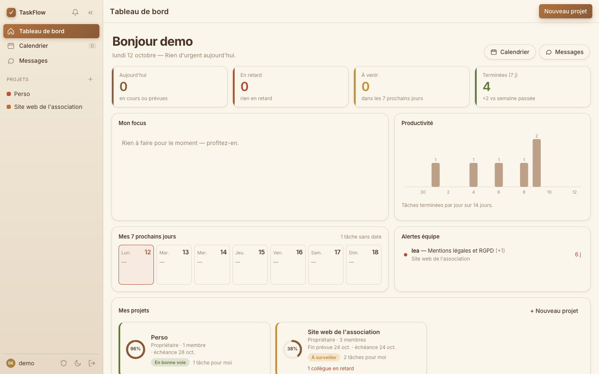
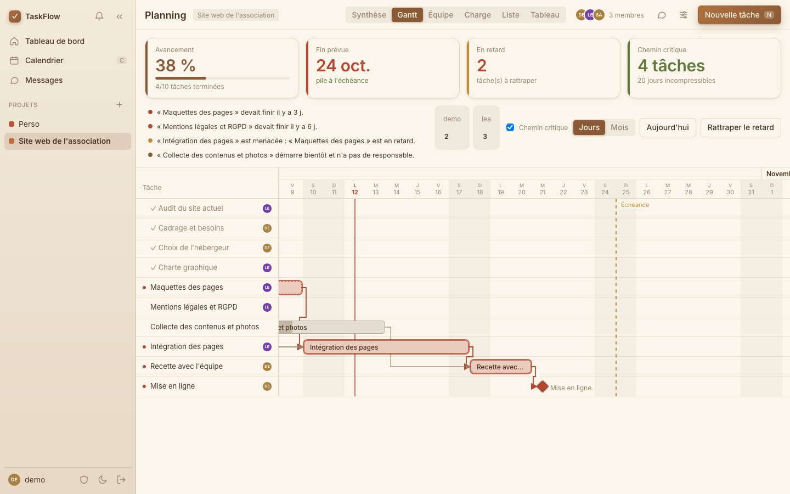
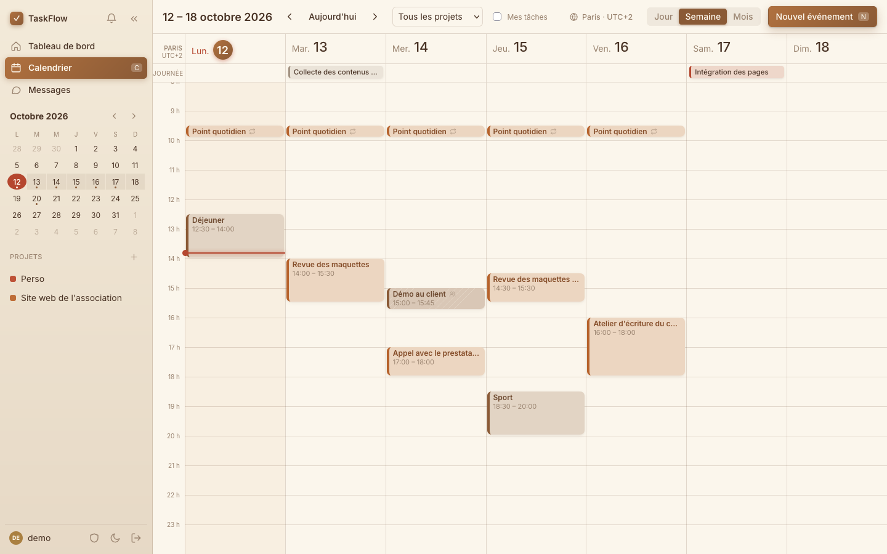
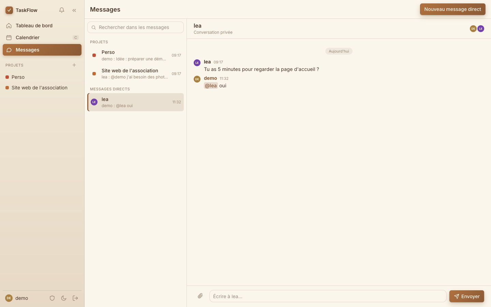
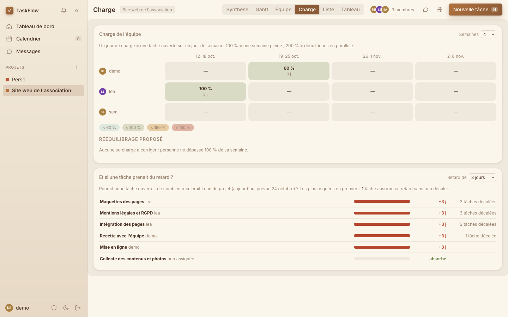

Tenez vos dates. Sans courir après personne.
TaskFlow voit venir les retards avant vous, remet votre planning d'aplomb en un clic et garde l'équipe au courant : tout ce qu'il faut pour mener un projet, dans un seul outil.

Vous reconnaissez peut-être ça
Le travail se passe bien jusqu'au jour où l'information se perd entre un tableur, une messagerie et un agenda.
Tout ce qu'il faut pour avancer
Quatre outils qui se parlent, au lieu de quatre onglets qui s'ignorent.
Un planning qui se corrige tout seul
Une tâche glisse ? Celles qui en dépendent suivent, et la nouvelle date de fin s'affiche aussitôt. Plus de planning obsolète dès le lundi matin.
- Chemin critique : repérez ce qui ne peut pas bouger sans repousser la livraison.
- Alertes claires : en retard, menacée, sans responsable.
- « Rattraper le retard » : replanifiez d'un seul geste.

Un agenda qui ne vous fait plus calculer les heures
Équipe à New York, client à Tokyo ? Affichez deux fuseaux côte à côte : la bonne heure pour tout le monde, même au changement d'heure.
- Déplacez, allongez ou créez un événement directement à la souris.
- Réunions récurrentes et invitations à accepter ou refuser.
- Vos tâches et vos rendez-vous dans une seule vue.

Les discussions restent à côté du travail
Un fil par projet. Écrivez @lea et elle est prévenue, #12 et la tâche s'affiche. Fini de retrouver une décision perdue dans une boîte mail.
- Messages directs, réponses, réactions et pièces jointes.
- Recherche dans tout l'historique.
- Seul sur un projet, le fil devient votre bloc-notes.

Voyez qui déborde avant que ça craque
Le remplissage de chaque semaine, personne par personne, avec une proposition de réassignation quand quelqu'un dépasse 100 %.
Et la question que tout le monde se pose : « que se passe-t-il si cette tâche prend trois jours de retard ? » La réponse s'affiche tout de suite.

Pour vous, pour votre équipe
Le même outil, que vous soyez seul ou à dix. Rien à configurer pour commencer.
Indépendant ou freelance
Un chrono pour savoir où passe votre temps, des tâches qui se répètent toutes seules, des jours ouvrés si vous ne travaillez pas le week-end, et un agenda qui parle toutes les heures du monde.
Équipe ou association
Propriétaire, membre ou lecteur : chacun voit et fait ce qui le concerne. Les mentions préviennent la bonne personne par la cloche, par e-mail ou par une notification du navigateur.
Démarrez vite
Quatre modèles de projet prêts à l'emploi, et vos propres projets enregistrables comme modèles.
Sachez où passe le temps
Chrono intégré, saisie manuelle et rapport par tâche et par membre.
Soyez prévenu, pas noyé
Notifications dans l'application, e-mail pour l'essentiel et résumé du matin facultatif.
Toujours sous la main
Installez TaskFlow sur l'écran d'accueil de votre ordinateur ou de votre téléphone.
Agréable à vivre
Thèmes clair et sombre aux tons chauds, pensés pour ne pas fatiguer les yeux.
Vos données, votre choix
Exportez tout en un fichier ou supprimez votre compte quand vous voulez.
Opérationnel en trois étapes
Pas de formation, pas de réglages interminables.
Créez un projet
Partez de zéro ou d'un modèle : les tâches et leurs enchaînements sont déjà là.
Invitez votre équipe
Ajoutez les membres, donnez-leur un rôle, et chacun reçoit ses tâches.
Suivez, sans relancer
Le tableau de bord, les alertes et la messagerie font le reste.
Questions fréquentes
Faut-il être plusieurs pour l'utiliser ?
Non. Seul, vous avez vos projets, votre agenda, un chrono et un fil de notes. L'équipe s'ajoute quand vous en avez besoin.
Mon planning se met-il vraiment à jour tout seul ?
Oui, pour les dépendances : quand une tâche est repoussée, celles qui en dépendent sont décalées à sa suite, et la fin prévue est recalculée. Les tâches terminées ne bougent jamais.
Je travaille avec des personnes dans d'autres fuseaux horaires.
L'agenda enregistre chaque heure de façon universelle et l'affiche dans votre fuseau, avec un second fuseau en colonne si vous le souhaitez, changements d'heure compris.
Puis-je récupérer mes données ?
Oui, à tout moment : un export de tout ce qui vous concerne, et la suppression de votre compte depuis vos réglages.
Comment l'essayer ?
Ouvrez l'application. Un compte de démonstration (demo / demo-taskflow-2026) contient déjà un projet, des événements et des messages.
Reprenez la main sur vos projets
Rassemblez planning, agenda et discussions. Vous verrez dès la première journée où vous en êtes.